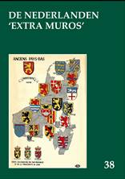

> publicaties > jaarboek 38 (2016)
Dit
38e Jaarboek De Nederlanden ‘extra
muros’ brengt eens te meer merkwaardige
bijdragen over de territoria die deel uitmaken van onze
Nederlandse kijk op de geschiedenis van onze territoria ‘extra
muros’. Als steeds opent het jaarboek met wat de
‘programmaverklaring’ van de Vereniging /Stichting Zannekin kan genoemd
orde; m.a.w. waar het ons om gaat.
Eens te meer is onze trouwe medewerker Cyriel Moeyaert
present, dit keer met een bijdrage over De Vlaming Willem van
Rubroek. We geven meteen mee dat hij een
tweede aanvulling op stapel heeft staan op zijn Woordenboek van het
Frans-Vlaams; een tweede Nieuw Oud Vlaams dus, aansluitend op zijn Nieuw Oud Vlaams 1,
dat we in 2011 (naast ons jaarboek) mochten uitgeven en dat in
2014 al een herdruk beleefde. Zijn Nieuw Oud Vlaams 2 is
ondertussen van de persen gerold en werd aan de leden als
bijlage bij het jaarboek toegestuurd.
Klaas
van Gelder en Jan
Debets besteden in Barrièretroepen in de Oostenrijkse
Nederlanden: vloek of zegen uitgebreid
aandacht aan wat daarmee - nu ruim drie eeuwen terug - allemaal
gepaard ging, en waarmee de barrièresteden in dit perspectief te
maken kregen.
Chronologisch daarop aansluitend vestigt Frank Judo de aandacht
op een merkwaardige pamflet van de Gentse jurist Jean-Louis
Serlippens die, in 1815 naar aanleiding van het aantreden van
het Koninkrijk der Nederlanden, de aandacht vestigde op de aan
Frankrijk verloren irredenta. Zijn opstel Strategische belangstelling
voor de Zuidelijke Nederlanden in de schaduw van Waterloo
vertelt ons daar meer over.
In Emile Verhaeren
(1855-1916) de Franstalige dichter met een Vlaams hart
haalt Ruud Bruijns
een figuur voor het voetlicht die een eeuw terug overleed maar,
niettegenstaande zijn Franstaligheid een Vlaming in hart en
nieren bleef en - getuige zijn oeuvre - de leuze “de taal is
gans het volk” glansrijk weerlegde.
Ook van de hand van Ruud Bruijns is de
“trouvaille” Les Marches de l’Est
(1909-1914) over Vlaanderen, Wallonië en de grensgebieden
van de Nederlanden. Het geopolitieke belang
van dat hier door vrijwel niemand gekende Franse tijdschrift
werd tot nog toe nergens in de Nederlanden onderkend. Zijn
eerste exploratie is dan ook verhelderend en toont alvast aan
dat het staatsimperialisme evenzeer aan de zuidgrens als aan de
oostgrens van de Nederlanden zijn aanhangers had.
In 1965 publiceerde de (toen nog)
Vereniging Zannekin,
onder de titel Bezinning bij een
verjaardag, de rede die Jean-Marie Gantois
gehouden had op 13 september 1964, naar aanleiding van de
viering van zijn 60e verjaardag in het Grafelijk Slot van Male.
Zijn persoonlijkheid lag overigens aan de basis van de
heroprichting van de vereniging. We zijn ondertussen zowat vijf
decennia verder en al die jaren werd zijn spoor verder gevolgd
en (ook richting ‘Duitse’ Nederlanden) uitgebouwd. Daarom
brengen we in piëteitsvolle herinnering het biografische essay
van Jos Vinks onder
de summiere titel Jean-Marie Gantois. Hij
was immers zowat de geestelijke stichter van Zannekin. Daarop
aansluitend volgen de Herinneringen
aan Jean-Marie Gantois van Hendrik Blanckaert,
een telg uit de Blanckaert-stam die destijds met Nicolaas
Zannekin aantrad in de Slag van Kassel in 1328.
Ook weer prominent aanwezig in deze editie
is Zeno Kolks.
Gewoontegetrouw brengt hij ook nu weer kunsthistorische gegevens
op architectonisch terrein aan de oppervlakte. Ook zijn Gebouwen
en beeldhouwwerken die in onze gebieden door
oorlogs- en ander geweld definitief ten onder zijn gegaan kadert binnen dit perspectief.
Zijn bijdrage vormt andermaal de naadloze overgang van de
zuidelijke naar de noordelijke gebieden.
Volgen van de hand van Marten Heida De
Gelderse Achterhoek en het Westmunsterland tijdens de
Eerste Wereldoorlog en Oostrand-sprokkels.
In de eerste bijdrage bespreekt hij uitgebreid de tweetalige
boekpublicatie Als Krieg
und Frieden nebeneinander wohnten – Toen oorlog en vrede
elkaars buren waren terwijl hij in zijn tweede bijdrage
tal van wetenswaardigheden over de ‘Duitse’ irredenta
bijeensprokkelde.
Evenzeer kaderend binnen de herdenking van
de Eerste Wereldoorlog, maar dan binnen de zuidelijke
Nederlanden, kadert de slotbijdrage van Luc Collin over De Engelen van Bergen
en Kerstmis
1914 in de loopgraven van de Westhoek waarin
hij enkele hoopvolle maar o zo
tijdsgebonden momenten evocerend in herinnering Afsluiten
doen we traditiegetrouw met een andermaal rijke oogst aan Kroniek
en boekbesprekingen, waarvoor voornamelijk
Marten Heida zich inspande.
|
omvang
|
208 paginas |
|
ISBN
|
9789071326363 |
|
prijs leden (inclusief verzendingskosten)
|
€ 29,00 |
|
prijs niet-leden (exclusief
verzendingskosten)
|
€ 35,00 |